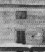
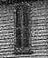
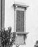

Pudd'nhead Wilson
1894

picture courtesy of "Mark Twain in His Times"
|  | Quarles Home, Florida, MO (source of inspiration) "We called her 'Aunt' Hannah, Southern fashion. She was superstitious, like the other Negros; also, like them, she was deeply religious. Like them, she had great faith in prayer and employed it in all ordinary exigencies, but not in cases where a dead certainty of result was urgent." Autobiography, 6 |
 |
Hannibal,
MO (source of inspiration) "Yet kindhearted and compassionate as she [Clemens's mother] was, I think she was not conscious that slavery was a bald, grotesque and unwarrented usurpation...Manifestly, training and association can accomplish strange miracles." Autobiography, 32 "If the threat to sell an incorrigible slave 'down the river' would not reform him, nothing would--his case was past cure." Autobiography, 33 |
 |
"Villa Viviani",
Florence, Italy (site of actual writing) "I know a few Italian words and several phrases, and along at first I used to keep them bright and fresh by whetting them on Angelo; but he partly couldn't understand them and partly didn't want to." Autobiography, 350 "I finished 'Those Extraordinary Twins' night before last...the last third of it suits me to a dot. I begin, to-day, to entirely re-cast and re-write the first two thirds--new plan, with two minor characters made very prominent, one major character dropped out, and the Twins subordinated to a minor but not insignificant place. The minor character will now become the chiefest, and I will name the story after him--'Pudd'nhead Wilson'." letter to Fred J. Hall, 12.12.1892, Florence, Italy, as quoted in Mark Twain's Letters to His Publishers "This time 'Pudd'nhead Wilson' is a success!...I have pulled the twins apart and made two individuals of them...their story has disappeared from the book...The whole story is centered on the murder and the trial...Therefore, 3 people stand up high, from beginning to end, and only 3--Pudd'nhead, 'Tom' Driscoll, and his mother Roxana...I have knocked out everything that delayed the march of the story, even the description of a Mississippi steamboat." letter to Fred J. Hall, 7.30.1893, Florence, Italy, as quoted in Mark Twain's Letters to His Publishers |
Back to Connecticut Yankee